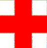

Second optimization ... The Cross:
| It is very important to notice that the cross piece in the puzzle is a very unique one. In whatever direction you mirror this piece or rotate, it will always be the same shape. That means that we have a piece that we can use as a reference in our grid. You do not have to worry about multiple possibilities and start rotating and mirroring the pieces. |  |
Third optimization ... No piece is the same:
Another remark is that no pice is identical. That means that when finding a solution,
the mirrored images are also a different solution. That makes that 1 solution contains 3 more.
Fourth optimization ... Minimize it all:
When combining the theory with the cross and the the uniqueness of the pieces, I thought that the best way to run this program is trying the Cross in every possible place of the first quadrant of the grid with all other blocks attached. The cross needs to be placed without falling in a mirrored position. Then every solution is 4 in reality.